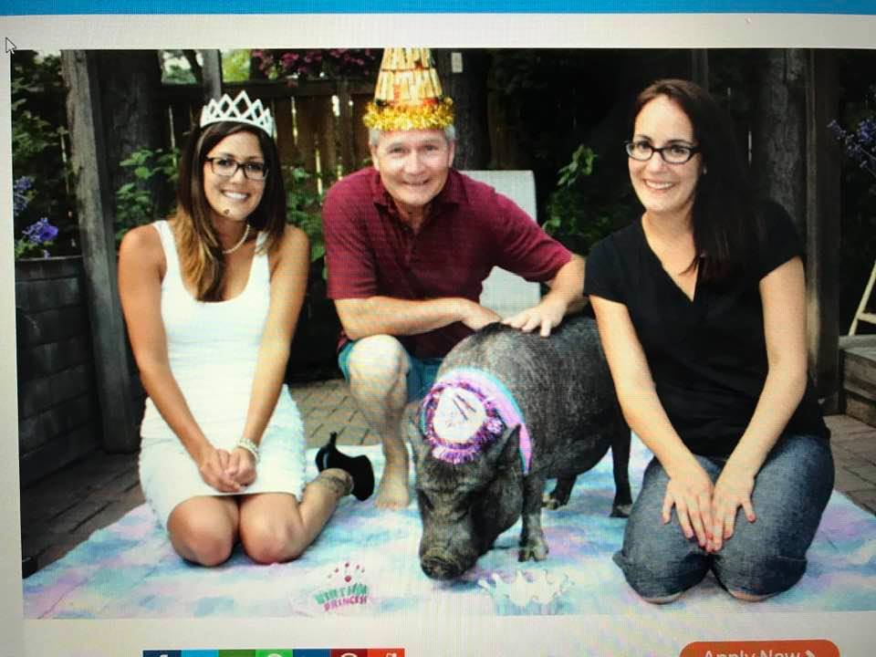

Here are a few facts about pigs
- Pigs are very smart! Their intelligence is higher than a dog's, some primates and even young human children.
- Pigs are incredibly social! Pigs form close bonds with each other and other animals.
- Pigs are much more tolerant of colder temperatures than heat. Pigs have no sweat glands so they can't sweat. This is why you will see pigs laying and rolling around in mud to cool off!
- Pigs are in the Suidae family, which includes eight genera and 16 species. Among those species are wild boars, warthogs and pygmy hogs and domestic pigs. So there are many different types of pigs than the traditional pink pig we tend to think of!
- Newborn piglets learn to respond to their mothers’ voices, and mother pigs communicate with their babies through grunts while nursing. Scientific research has found that piglets have a certain teat order and each piglet has its own teat to suckle from.


Pig Age! How many years can a pig live?
Well, depending on what kind of a pig and whether or not the pig is used on a farm, is a wild pig, or a domestic, an average pig can live from 10-15 years! Some even reach the age of 20-years-old if properly taken care of!

in fact, according to the Guinness Book Of World Records, the oldest pig ever was 22 years and 354 days old!
